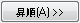

このツールは列をワークシートラベル行の値でソートします。また、複数の列ラベル行を使用すると階層ソートを行えます。
Originはこのダイアログを開くのに2通りの計算方法を準備しています。
このダイアログでは有効なラベル一覧から使用する行を選択し、昇順または降順のボタンをクリックして階層(ネスト)ソートの基準パネルに項目を移動します。ここでフォーマットなども編集できます。1つ以上の項目を加える事ができます。
選択した列ラベル行に欠損値がある場合、対応するラジオボタンを選択する事で最小の値か最大の値として扱うように定義できます。
内容 |
このパネル内に利用可能な行の一覧が表示されます。一覧にはロングネーム、コメント、パラメータ、サンプリング間隔、ユーザ定義があります。
有効なラベルパネルでラベルを選択し、昇順または降順ボタンをクリックして階層(ネスト)ソート基準パネルに移動します。
また、階層(ネスト)ソート基準パネルにラベルを追加する時、行のフォーマットを指定できます。
|
Note:
|
ラベル行はテキスト、数値、時間、日付のいずれかに設定できます。それぞれ正しい値でソートするには、行のフォーマットが正しく設定されている必要があります。
| 列のデータ型 | ラベル行のフォーマットをテキスト、数値、時間、日付の中から選択します。 |
|---|---|
| 表示フォーマット | 時間か日付を列のデータ型として選択した場合、このドロップダウンリストが表示されます。列のデータを表示する形式を決めます。 |
| カスタム表示 | カスタム表示が表示フォーマットで選択された場合、このコンボボックスが表示されます。そして、日付や時間のフォーマットを編集できます。 |
ラベル内の欠損値を列内の最小値または最大値に設定するか指定する事ができます。
選択した列かワークシート全体を選択します。
|
Note: どの列も選択していない状態でこのダイアログをメインメニューからワークシート：ラベルで列をソートで開くと、ワークシート全体がデフォルトで選択されていて、このグループ全体がグレーアウトします。 |